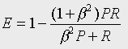
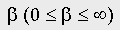
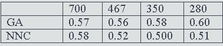
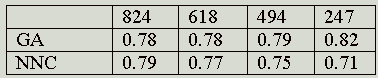
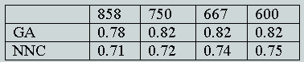

Department of Information Studies, University of Sheffield
Sheffield, UK
Cluster analysis, or automatic classification, is a multivariate statistical technique that seeks to identify groups, or clusters, of similar objects in a multi-dimensional space[1]. There have been many attempts over the years to use such procedures for the organisation of document databases, so that documents with large numbers of index terms in common are grouped together[2-7]. In this paper, we consider the use of a genetic algorithm, henceforth a GA, for document clustering. GAs are a class of non-deterministic algorithms that derive from Darwinian theories of evolution[8-10]. They provide good, though not necessarily optimal solutions to combinatorial optimisation problems, where the number of possible solutions is far too great for all of the possibilities to be explored in a reasonable time by a deterministic algorithm. One such problem is that of non-hierarchic clustering, where the clustering method seeks to partition a set of objects into a set of non-overlapping groups so as to maximise some external criterion of 'goodness of clustering', typically the extent to which the within-cluster inter-object similarities are maximised and the between-cluster similarities minimised. The combinatorial nature of the partitioning problem is emphasised by Duran and Odell[11]who note that there are ca. 193 million possible partitions of as few as 19 objects into 3 clusters: the evaluation of this number of partitions would hence be extremely demanding of computational resources, while it would be totally infeasible to generate and then to evaluate the partitions resulting from a database of non-trivial size if a deterministic algorithm is used. Raghavan and Birchard[12]seem to have been the first to suggest that it would be possible to use a GA for document clustering, although none of their experiments used actual documents and queries: in this paper, we compare the retrieval effectiveness of GA-based document clusters with that of network-based clusters, which contain just the most important inter-document similarities and which are thought to more appropriate for retrieval purposes than conventional clustering methods[4-6].
In contrast to knowledge-intensive approaches to computing, such as expert systems, GAs require only a limited amount of domain-specific information and they are accordingly starting to be used in a wide range of applications[8]. Here in Sheffield, we have been interested in the use of GAs for searching chemical and textual databases for several years and the work described here is part of this ongoing research programme[13].
The modus operandi of a GA is based on the mechanics of natural selection, combining survival of the fittest with a randomised, and yet structured, information interchange among the individuals in a population of potential solutions to the problem under investigation. These individuals are called chromosomes and they encode information characterising the solution, e.g., the numeric values of a set of parameters in a function optimisation problem. The fitness function takes a single chromosome as input and returns a quantitative measure of the 'goodness' of the solution represented by that chromosome. There are two principal genetic operators that process a population of chromosomes. These are crossover, which combines parts of the fittest creatures of the previous generation to provide new creatures, and mutation, which introduces new information at random. The fitter an individual creature is, the more likely it is to survive and then to pass parts of itself onto future generations. Accordingly, the chromosomes in a population will tend to encode better and better solutions to the problem under investigation as the generations pass.
Assume that we wish to generate a partition of a set of N documents into M clusters. We can generate a trial classification by assigning each of the documents to one of the clusters at random, so that each cluster contains ca N/M documents on the average. The GA then moves documents from one cluster to another until it is not possible further to improve the classification, using some quantitative measure of the 'goodness' of a partition. The principal aim of a clustering method is to identify clusters that maximise the within-cluster inter-document similarities, and we can hence estimate the goodness of a particular partition by means of some mathematical function that describes these similarities. Such functions provide the driving force for several non-hierarchical clustering methods[1]and they hence provide a natural fitness function for a GA-based clustering method.
Each of the documents was represented by a T-element term, vector in which the I-th element was set to zero or to one depending upon whether the I-th term was present in that document. The similarity, SIM(I,J), between two documents I and J that are in the same cluster in a partition was measured by means of the Tanimoto coefficient. If I and J have N(I) and N(J) terms, respectively, (i.e. have N(I) and N(J) elements, respectively, set to one in their term vectors) and if C of them are common, then the Tanimoto coefficient is given by C/(N(I)+N(J)-C). The intra- cluster similarity for a particular cluster was calculated by the arithmetic mean of all of the document-centroid similarities, where the centroid contained all of the terms that occurred in a user-defined threshold number of documents.
The chromosomes in our GA encoded the membership of each of the documents. Thus, a chromosome was an N-integer string, in which the I-th element contained the identifier for the I- th of the N documents in a collection and the genetic operators were applied to populations of such chromosomes. Chromosomes were selected by means of conventional roulette-wheel selection and the available genetic operators were simple mutation, one-point and two-point crossover (though the results presented here used just the former type of crossover). Once the fitness of each chromosome had been evaluated, the calculated fitnesses were scaled by means of linear normalisation so as to ensure that the population did not become dominated by the descendants of a single super-fit chromosome and that the less-fit chromosomes had at least some chance of reproducing. Subsequent generations were produced using steady-state replacement, to ensure the retention of the best solutions at each stage, and the GA terminated after a user- defined number of iterations.
The experiments used three standard document test collections, containing documents, queries, and their associated relevance judgements. These were the Cranfield (1400 documents and 225 queries on the subject of aerodynamics), Harding (2472 documents from the INSPEC database and 65 queries) and LISA (6004 documents from the Library and Information Science Abstracts database and 35 queries) test collections.
A collection was clustered using our GA, and then searches carried out upon the resulting sets of clusters. We have evaluated the effectiveness of these searches using the concept of the optimal cluster[3]. This involves considering each cluster in turn as the response to one of the queries, and then using the relevance judgements to evaluate the effectiveness (using some performance measure) if that cluster was to be retrieved. The optimal cluster for a search is that cluster that gives the best value for the chosen measure of effectiveness, and the overall effectiveness of the set of clusters is then obtained by averaging these individual optimal values over the entire set of queries associated with a test collection. This approach is unrealistic, in that it involves measuring a level of performance that is far in excess of that obtainable in any realistic search of a clustered file; however, it has the advantage that it focuses attention on the actual clusters that have been generated, without the need to consider factors such as the form of cluster representative that is used to characterise the documents in a cluster or the query-representative matching function that is used to determine the similarities between a query and each cluster representative.
The performance measure that was used was the E-measure[3]. Assume that a search has a recall and a precision of R and P, respectively; then E is defined to be

where the parameteris used to reflect the relative importance attached by the user to recall and to precision. In our experiments, beta was set to 1.0, which corresponds to attaching equal importance to recall and to precision. Note that the smaller the E-value, the greater the retrieval effectiveness.
We have compared our GA results with those obtained in searches of nearest-neighbour clusters, or NNCs[4,5]. This is a particularly simple type of clustered file organisation, in which each of the documents in a collection is grouped with some fixed number of the documents to which it is most similar. NNCs, and related file structures based on spreading-activation models, have been shown to perform well in previous studies of cluster-based retrieval, and thus provide a natural baseline against which we can compare the performance of the GA clusters. The precise form of an NNC depends upon the number of nearest-neighbour documents, n, that are clustered with a particular document. In our experiments NNCs were generated so that the clusters were similar in size to the average size of the GA clusters. For example, if a GA clustering run was carried out with an initial set of 350 clusters for the Cranfield collection, which has 1400 documents so that the clusters have four documents on average in each cluster, then the NNCs would be those for which n = 3, i.e., one document and three nearest neighbours.
The bulk of our experiments involved the Cranfield test collection, since this is known to respond particularly well to cluster-based methods. We started by running the GA with a large number of combinations of parameters to ascertain their effect on performance. In this respect, we found the GA to be highly robust, with quite large changes in the parameter values resulting in very small differences in performance (although there were noticeable differences in the distribution of cluster sizes, with some combinations of parameter values resulting in a few large clusters and large numbers of small, or even empty, clusters). There were also only minor variations in performance if a GA run was repeated using the same set of parameter values, i.e., the results did not appear to be affected substantially by the inherently non-deterministic character of the algorithm.
The four principal parameters that were studied were: the population size of the GA; the use of either one-point or two-point crossover; the mutation rate; and the fraction of the documents in a cluster that must contain a term for it to be included in the centroid. It was found that variations in these parameters produced very little variation in retrieval performance and we hence used just a single set of parameter values (a population size of 150, one-point crossover, a mutation rate of 0.05 and an index-term threshold of 0.4) for the main experiments, the details of which are summarised in Tables 1-3. These tables list the results that were obtained when the first set of GA parameters were used with the Cranfield, Harding and LISA collections, respectively. In each case, the NNC results are those for optimal clusters searches of the NNC file that has approximately the same-sized clusters as the GA clusters. Thus, in the case of the Cranfield collection, a comparison was made between the GA results with 700, 400, 350 and 280 clusters and the NNC clusters that involve 1, 2, 3 and 4 nearest neighbours, respectively. In the case of the Harding and LISA collections, the NNC clusters involved 2, 3, 4 and 9 nearest neighbours, and 6, 7, 8 and 9 nearest neighbours respectively. It was not possible to test smaller clusters for these collections owing to the computational demands of the GA when large numbers of clusters need to be processed.

Table 1: Mean E values for the GA and NNC clusters with the Cranfield collection, using parameter-set #1 and different numbers of clusters.

Table 2: Mean E values for the GA and NNC clusters with the Harding collection using parameter-set #1 and different numbers of clusters.

Table 3: Mean E values for the GA and NNC clusters with the LISA collection using parameter-set #1 and different numbers of clusters.
In this paper, we have discussed experiments to compare the clusters of documents resulting from a GA-based clustering method with those from an established approach to automatic document classification. An inspection of Tables 1-3 suggests that the NNC E values are normally, though not invariably, smaller than the corresponding GA values, and we hence conclude that the GA clustering method tested here does not offer any obvious advantages over currently-available methods for the grouping of documents. In addition, the non-deterministic nature of a GA means that it is not possible to obtain a unique set of clusters for a particular set of documents, although our results suggest that the variability is not large. We hence conclude that while GAs provide an obvious approach to the generation of partitioning-type clusterings of document databases, such clusterings are not of practical use.
We thank the British Library Research and Development Department and Wellcome Research for funding.
Note: reference is made to some items in more than one place in the text and so links are provided as appropriate.
[1]Everitt, B.S. Cluster Analysis. London: Edward Arnold, 1993. [Back to text - (a);or (b)]
[2]Salton, G. The SMART Retrieval System. Englewood Cliffs, NJ: Prentice-Hall, 1971. [Back to text]
[3]van Rijsbergen, C.J. & Croft, W.B. "Document clustering: an evaluation of some experiments with the Cranfield 1400 collection." Information Processing and Management, 11, 1975, 171-182. [Back to text - (a);(b)or(c)]
[4]Griffiths, A., Luckhurst, H.C. & Willett, P. "Using inter-document similarity information in document retrieval systems." Journal of the American Society for Information Science, 37, 1986, 3-11. [Back to text - (a)or(b)or(c)]
[5]Willett, P. "Recent trends in hierarchic document clustering: a critical review." Information Processing and Management, 24, 1988, 577-597. [Back to text - (a)or(b)or(c)]
[6]Croft, W.B., Lucia, T.J., Cringean, J.K. & Willett, P. "Retrieving documents by plausible inference: an experimental study." Information Processing and Management, 25 , 1989, 599-614. [Back to text - (a)or(b)]
[7]Can, F. "On the efficiency of best-match cluster searches." Information Processing and Management, 30, 1994, 343-361. [Back to text]
[8]Davis, L. (Editor) Handbook of Genetic Algorithms. New York: Van Nostrand Reinhold, 1991. [Back to text - (a)or(b)]
[9]Forrest, S. "Genetic algorithms: principles of natural selection applied to computation." Science, 261, 1993, 872-878. [Back to text]
[10]Goldberg, D.E. "Genetic and evolutionary algorithms come of age." Communications of the ACM, 37(3), 1994, 113-119. [Back to text]
[11]Duran, B.S. & Odell, P.L. Cluster Analysis: A Survey. Berlin: Springer-Verlag, 1974. [Back to text]
[12]Raghavan, V.V. & Birchard, K. "A clustering strategy based on a formalism of the reproductive process in natural systems." Proceedings of the 2nd International Conference on Research and Development in Information Retrieval, 1978, 10-22. [Back to text]
[13]Jones, G., Robertson, A.M. & Willett, P. "An introduction to genetic algorithms and to their use in information retrieval." Online and CD-ROM Review, 18, 1994, 3-13. [Back to text]